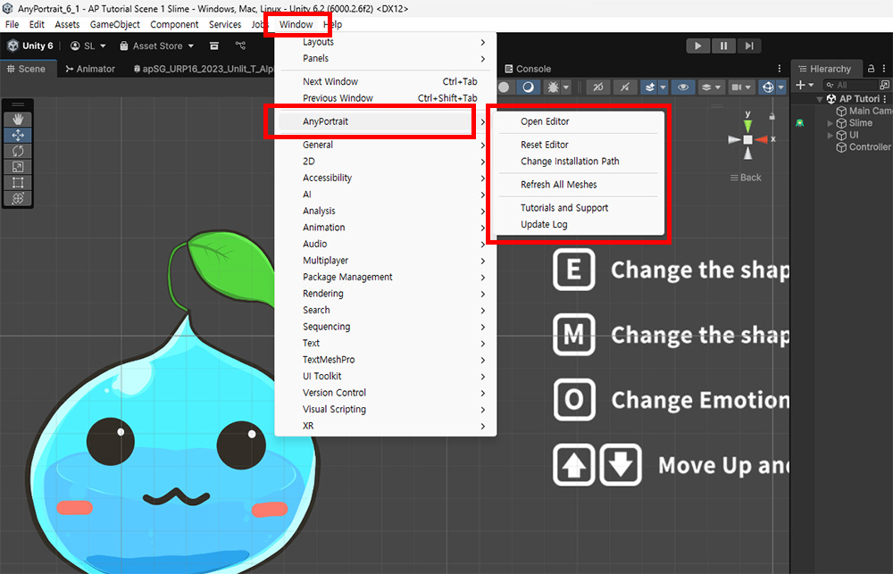
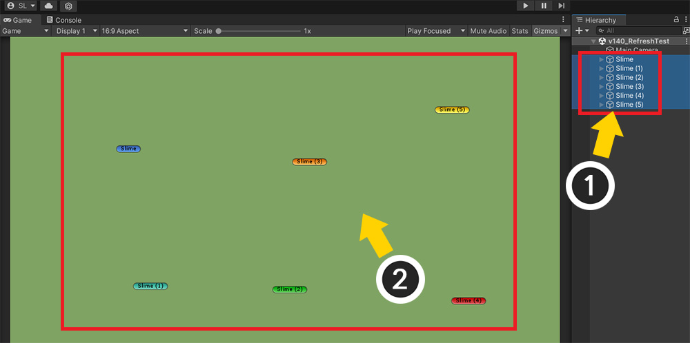
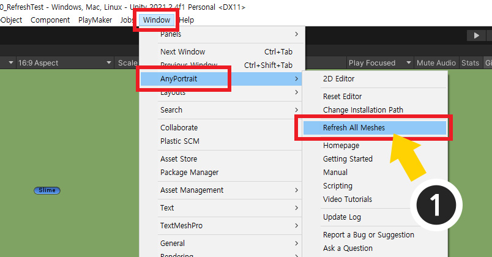
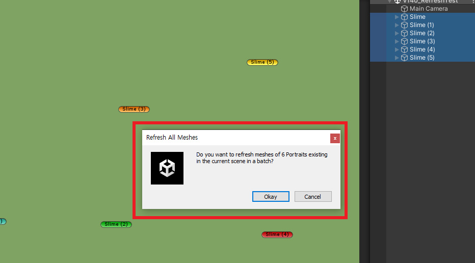
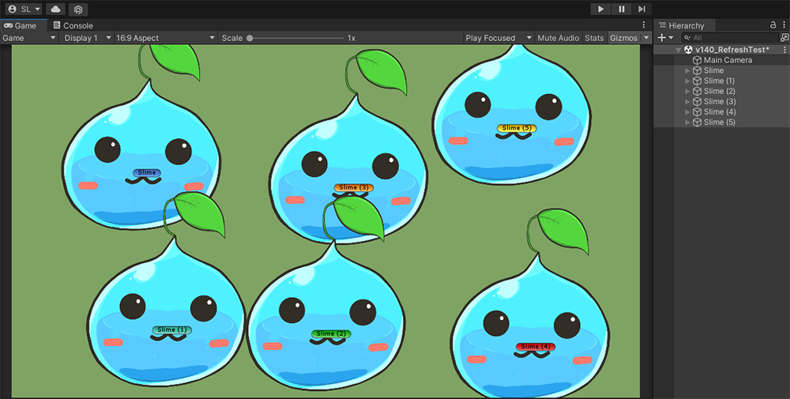
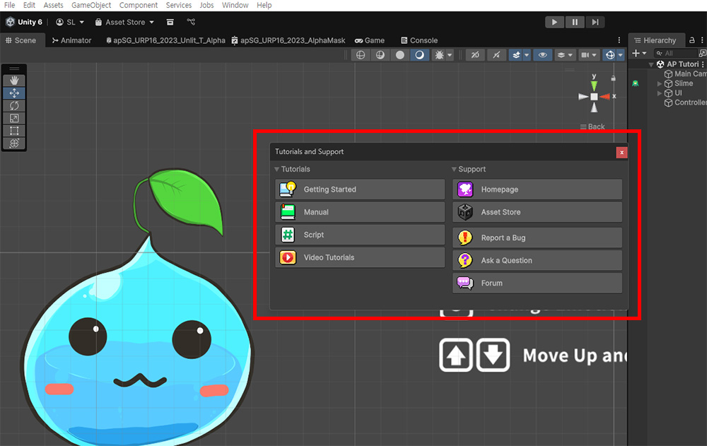
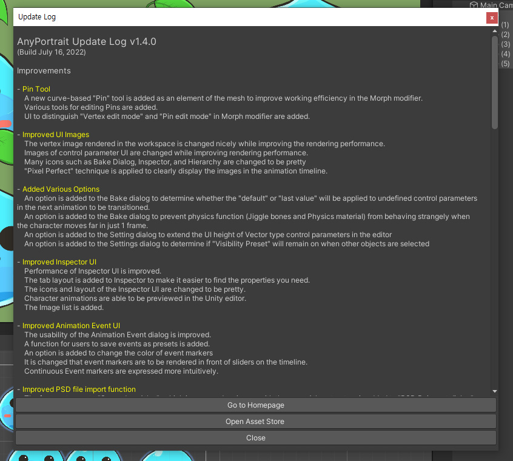

AnyPortrait > Manual > AnyPortrait menu in Unity Editor
If you select AnyPortrait's menu in the Unity editor, you can see quite a few items.
In addition to the function to open AnyPortrait editor, there are items such as providing information to users, which are introduced one by one on this page.

If you select the Window > AnyPortrait menu of the Unity Annator, you can see several sub-menus as shown above.
Each item is as follows.
- 2D Editor : Open AnyPortrait editor.
- Reset Editor : If the editor has encountered a critical problem and cannot be opened, click this to reset the editor's data.
- Change Installation Path :
If the AnyPortrait package is installed in a non-default path, click this item to change the installed path. (Related page)
- Refresh All Meshes : Refresh the meshes of all apPortrait characters currently placed in the scene in a batch.
- Tutorials and Support : You can open tutorials, homepages, asset stores, contact pages, etc.
- Update Log : Open the tutorial page created as a video.

AnyPortrait's mesh is temporary data generated in real time, so if it is copied from a prefab or other scene, it will not be displayed as above.
(1) Currently there are 6 characters in the scene, (2) but nothing is shown in the scene.

(1) In the Unity editor, select Refresh All Meshes from the AnyPortrait menu.

A dialog will appear asking if you want to update the meshes of the characters found in the current scene.
(Inactive characters are excluded.)

As above, the meshes of all the characters are refreshed again and can be seen in the scene.

Selecting the Tutorials and Support menu will open a window like the one above.
You can open tutorials, websites, and more from here.
- Getting Started : Tutorial page for beginners
- Manual : Documentation page introducing AnyPortrait's various features
- Script : Manual for script writing
- Video Tutorials : Video tutorials uploaded to YouTube. (This section is not available in the Chinese Store version.)
- Homepage : RainyRizzle team's homepage
- Asset Store : The AnyPortrait page on the Unity Asset Store opens in a web browser or package manager
- Report a Bug : Report bugs or suggestions to us
- Ask a Question : Ask us any questions you may have
- Forum : Forum page where you can ask questions to our team or other users

If you open the Update Log item, you can reopen the dialog you could see immediately after the update.
Check out what's added and improved in the new version!